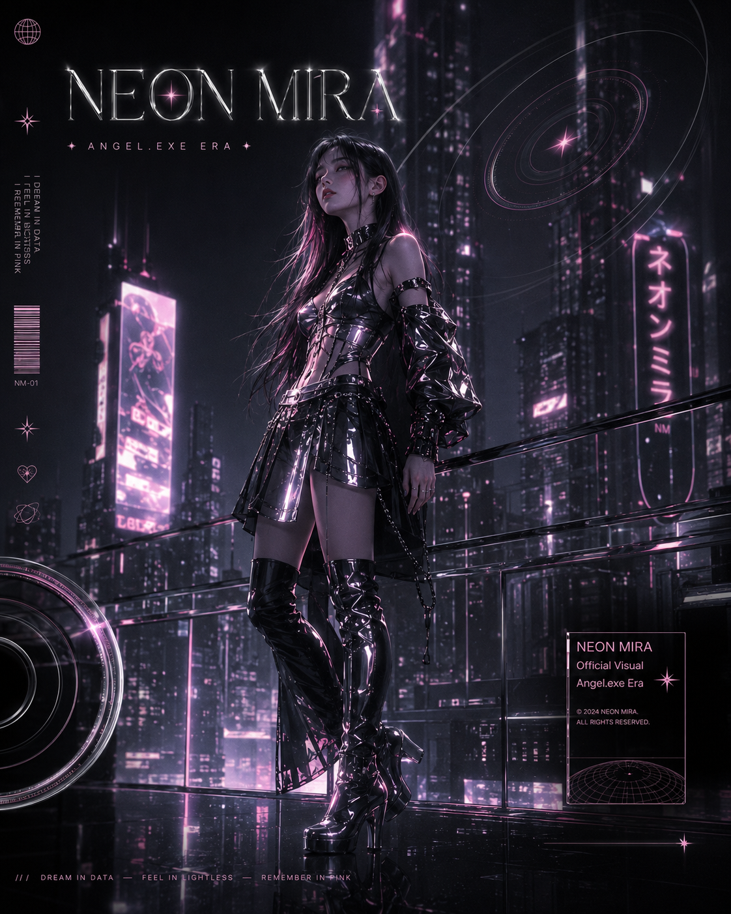

CHROME SIGNALRECORDS
サイバー美学とシティポップを軸にした近未来レーベル。音楽だけでなく、ビジュアル・ステージ・デジタル体験まで一貫した世界観を構築する。「近未来の音楽を記録する」ことを標榜し、NEON MIRAのデビューを支えた。
ジャケットアート、MV、ライブ演出——すべてにクロームの質感とネオンピンクの信号を宿らせ、リスナーをデジタルと現実の境界へ誘う。
NEON MIRA
サイバーシティポップを標榜する架空のソロアーティスト。クローム、夜の都市、Y2K美学から生まれた世界観と、デジタルな冷たさを帯びたシティポップサウンド。
NEON MIRA / サイバーシティポップ
NEON MIRAは、クロームの質感、夜の都市、Y2Kサイバーカルチャーをテーマにした架空の女性ソロアーティスト。シティポップの浮遊感と、デジタルな冷たさを混ぜたサウンドで、現実と仮想の境界にある感情を描く。
2026年、CHROME SIGNAL RECORDS より1st EP「Angel.exe」でデビュー。レーベルは「近未来の音楽を記録する」ことを標榜し、ビジュアルとサウンドの両面でサイバー美学を追求する。NEON MIRAの楽曲は、壊れたデータ、届かない信号、雨上がりの都市——デジタル時代の孤独と美しさを音に変換する試みである。
CHROME SIGNALRECORDS
サイバー美学とシティポップを軸にした近未来レーベル。音楽だけでなく、ビジュアル・ステージ・デジタル体験まで一貫した世界観を構築する。「近未来の音楽を記録する」ことを標榜し、NEON MIRAのデビューを支えた。
ジャケットアート、MV、ライブ演出——すべてにクロームの質感とネオンピンクの信号を宿らせ、リスナーをデジタルと現実の境界へ誘う。
クローム
冷たく反射する金属の質感。現実と仮想の境界を映し出す、NEON MIRAの世界の基盤。ジャケット、MV、ステージすべてにこの質感が宿る。
夜の都市
眠らない都市の夜景。高層ビルの灯りと濡れたアスファルトが織りなす、孤独な美しさ。楽曲の舞台はいつも、夜明け前の大都市。
デジタル記憶
消えゆくデータの中に残る感情の断片。記憶はファイルのように保存され、時に破損する。壊れた写真、読めないメッセージ——それでも残る温かさ。
サイバーの夢
サイバー空間に漂う夢のような感覚。現実よりも鮮やかで、触れると消えてしまいそうな世界。聴く人を、少しだけ別の次元へ誘う。
ピンクの信号
途切れそうなネオンピンクの光。希望と儚さが交差する、NEON MIRAのシグネチャーカラー。暗闇の中で最後まで点き続ける、小さな信号。
ネオンの雨
夜の都市に降り注ぐ、光を帯びた雨。路面に映るネオンと看板の反射が、ひとつひとつの水滴の中に別世界を閉じ込める。NEON MIRAの音に流れる、最も幻想的な情景。

ビジュアルアイデンティティ
NEON MIRAのビジュアルは、黒い背景、シルバーの反射、淡いピンクの光を中心に構成される。人物を大きく見せるよりも、都市や光の中に存在する小さなシルエットとして描くことで、幻想感と距離感を演出する。
フォント、UI要素、グリッチ——Y2K時代のデジタル美学を現代的に再解釈。ジャケットアートは「壊れたCD-ROMの表紙」のような質感を目指し、ステージではネオンラインとクロームの反射面が空間を包む。


RECORD // 001
NEON MIRA
// スタイル
サイバーシティポップ
// カラー
80年代シティポップの温かいシンセと、冷たいデジタル音色を重ねる。アナログの余韻とデジタルの精度が共存する。
透明感のある歌声に、わずかなエフェクトを加えた処理。遠くから聞こえるような、儚いボーカルトーンが特徴。
雨音、都市のノイズ、UIの効果音——楽曲の背景に「世界観の音」を忍ばせ、没入感を高める。
Cyber Pop Weekly
「壊れたUIの中に残る優しさ——NEON MIRAは、デジタル時代のシティポップを再定義する新星だ。」
Midnight FM
「Angel.exeは、Y2K美学と現代のエモーショナルポップが交差する、今年最も印象的なデビュー作のひとつ。」
Chrome Signal Blog
「CHROME SIGNAL RECORDSが仕掛ける、近未来シティポップの旗手。ビジュアルとサウンドの一体感が際立つ。」
デモ制作・レーベル交渉
「Angel.exe」「Pink Signal」のデモを制作。CHROME SIGNAL RECORDS と契約交渉を開始。
デビュー発表
CHROME SIGNAL RECORDS よりデビュー決定を発表。1st EP「Angel.exe」のリリースを予告。
リード曲先行公開
タイトル曲「Angel.exe」をSpotify・YouTubeで先行公開。MVティザーも公開。
1st EP リリース
全5曲入りEP「Angel.exe」を各種ストリーミングサービスで配信開始。